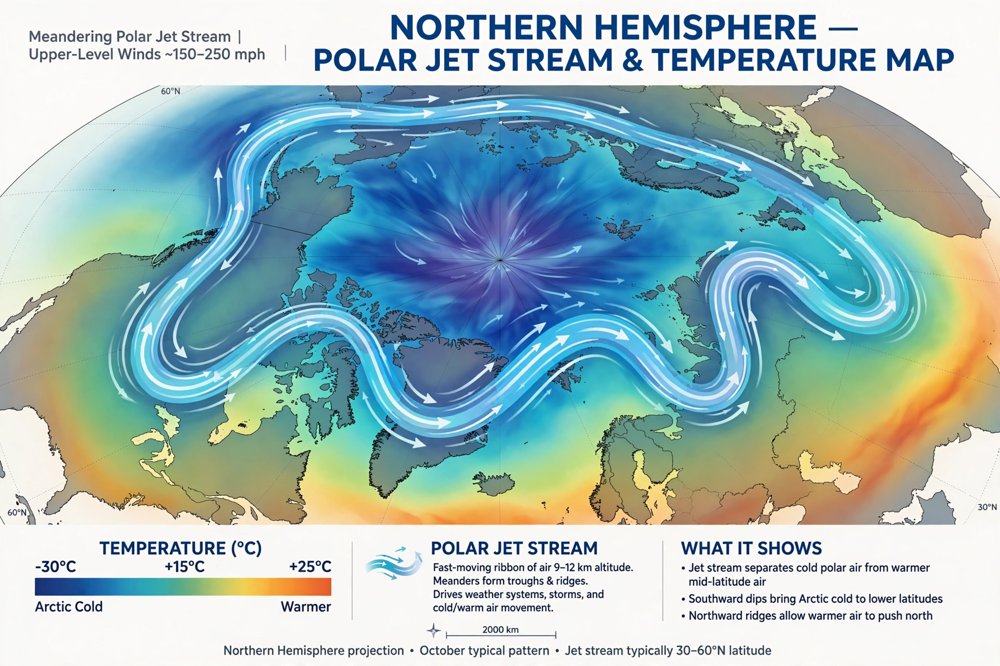

Jet stream

Jet streams are fast, narrow currents of air flowing through the upper troposphere and lower stratosphere, typically 9–12 kilometres above the surface. They meander around the planet in great waves, reach core speeds that can exceed 300 kilometres per hour, and steer much of the mid-latitude weather.
The strongest are the polar-front jets, found where cold polar air meets warmer subtropical air; a weaker subtropical jet sits nearer the tropics.
Formation and discovery
Jet streams arise from the temperature contrast between air masses, translated by the Coriolis effect into powerful westerly winds concentrated where the tropopause breaks between circulation cells. Their existence was documented by high-altitude military flights in the Second World War, when bombers encountered unexpectedly fierce headwinds over Japan and tailwinds on return routes.
The jets are not steady rivers but shifting, pulsing ribbons: their waves (Rossby waves) grow, stall and break, setting up the blocking patterns that can lock in heatwaves, cold spells or prolonged rain.
Effects
Aircraft exploit the jets eastward and avoid them westward, saving or costing substantial fuel. At the surface, the jet's position governs the track of mid-latitude storms; a waviness in the jet is associated with persistent extremes. Whether Global warming and Arctic amplification are making the jet wavier is an active and contested research question in Meteorology.
See also: Meteorology · Weather · Atmosphere · Climate · Monsoon